library(tidyverse)
library(ggridges)
library(ggpubr)
library(cowplot)
library(VennDiagram)
library(eulerr)
library(gghalves)
library(ggdist)
report_stats <- read_tsv("report.stats.tsv")
report <- read_tsv("report.tsv")Phosphopeptide enrichment pilot report
1 Description of data analysis using DIA-NN report
This is a pilot experiment using two cryopreserved kidney samples, one control and another from envenomed mouse. Peptides were injected in Q-Exactive instrument in DIA mode. Raw files were converted to raw.dia and analyzed using DIA-NN.
File identification for each test:
- Testing different gradients
“AFAC_01_oldGrad” stands for eluate from Fe-NTA using an old gradient (sample K2 = SS3Kna1) 250µg
“AFAC_01” stands for eluate from Fe-NTA using an adjusted gradient (sample K2 = SS3Kna1) 250µg
“AFAC_02_oldGrad” stands for eluate from Fe-NTA using an old gradient (sample K14 = VS3Kna2) 250µg
“AFAC_02” stands for eluate from Fe-NTA using an adjusted gradient (sample K14 = VS3Kna2) 250µg
- Flow through from Fe-NTA onto TiO2 cartridges
“AFAC_03” stands for eluate from TiO2 using an old gradient (sample K2 = SS3Kna1) 250µg
“AFAC_04” stands for eluate from TiO2 using an old gradient (sample K14 = VS3Kna2) 250µg
- Flow Through from TiO2 coming from IMAC-TiO2 or only TiO2 strategy
“AFAC_05” stands for FT from IMAC-TiO2 using an old gradient (sample K2 = SS3Kna2) 250µg
“AFAC_06” stands for FT from IMAC-TiO2 using an old gradient (sample K14 = VS3Kna2) 250µg
“AFAC_07” stands for FT from TiO2 using an old gradient (sample K1 = SS3Kna1) 500µg
“AFAC_08” stands for FT from TiO2 using an old gradient (sample K13 = VS3Kna1) 500µg
- Testing different spray voltages (1.5 KV vs 2.1 KV)
“AFAC_07_221216022013” stands for eluate from TiO2 using an old gradient and 2.1 KV (sample K1 = SS3Kna1) 500µg
“AFAC_08_221216044325” stands for eluate from TiO2 using an old gradient and 2.1 KV (sample K13 = VS3Kna1) 500µg
“AFAC_09” stands for eluate from TiO2 using an old gradient and 1.5 KV (sample K1 = SS3Kna1) 500µg
“AFAC_10” stands for eluate from TiO2 using an old gradient and 1.5 KV (sample K13 = VS3Kna1) 500µg.
2 Loading files and libraries
3 Evaluating the effect of different gradients over phosphopeptide enrichment
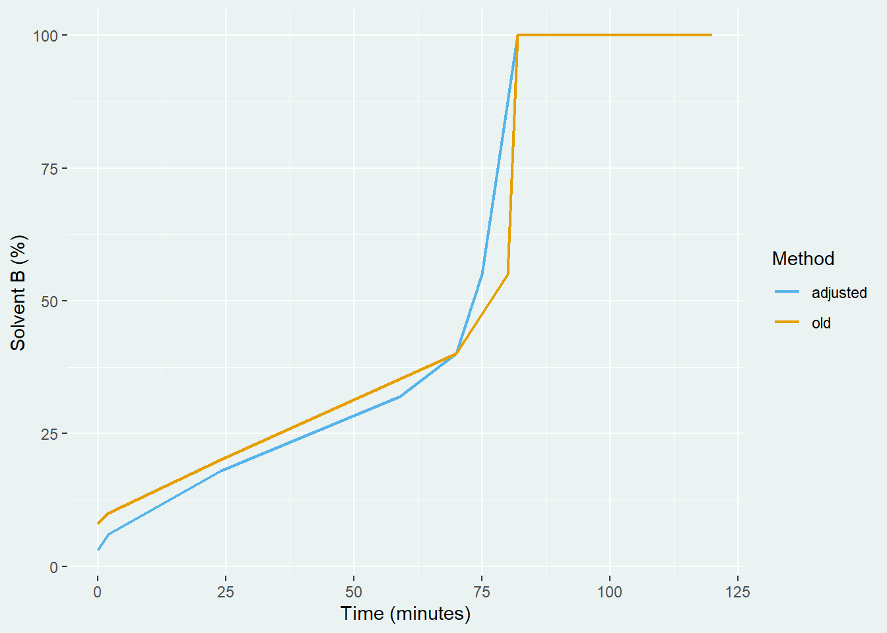
Protein quantity in log2(MaxLFQ) per sample. In blue: adjusted gradient, orange: old gradient.
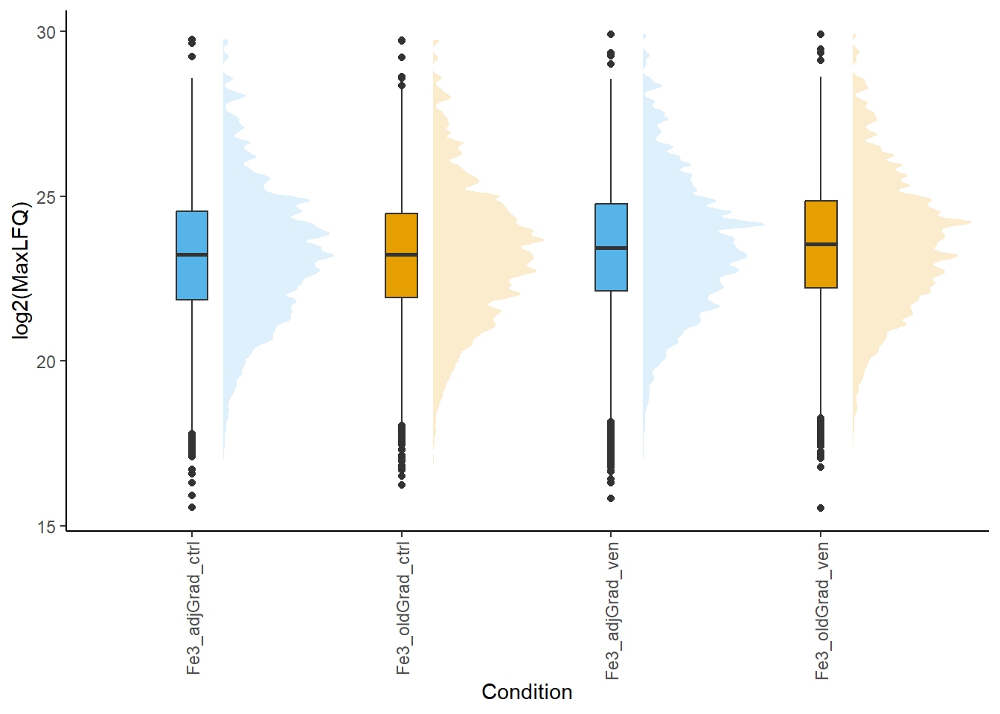
Peak width of two samples using different gradients for IMAC-enriched peptides from 250 µg protein. Y-axis: log2(MaxLFQ); X-axis: peak width; color: phosphopetides found using adjusted gradient (blue), phosphopetides found using old gradient (orange), total number of identified peptides (grey background).
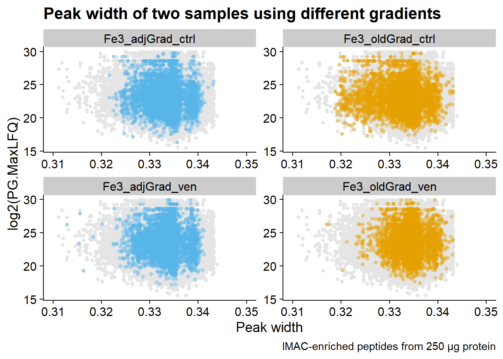
Chromatograms for gradient test. MS2-based quantity of the precursor (charged peptide), non-normalized is showed in Y-axis and retention time in minutes on X-axis. IMAC-enriched peptides from 250 µg protein. in blue: adjusted gradient, orange: old gradient.
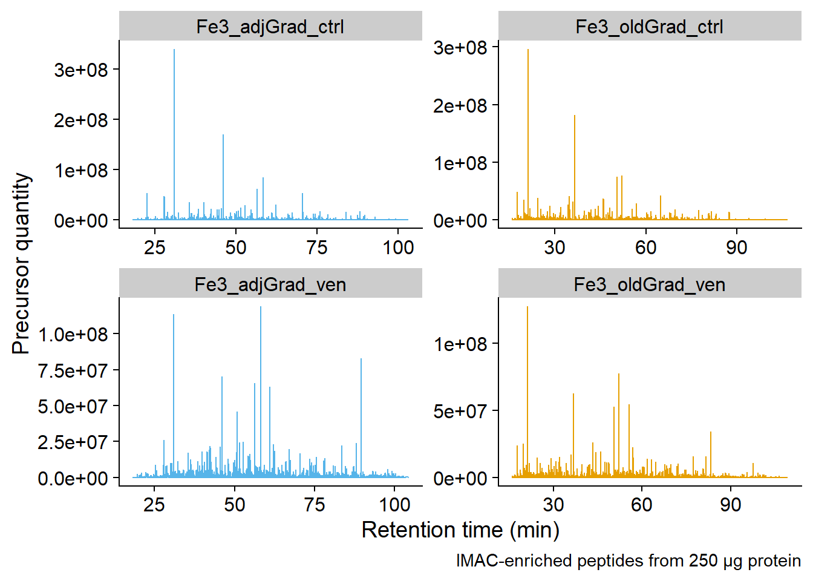
Testing the effect of adjusted gradient over phosphopeptide enriched using IMAC. Slightly more identifications (all identified peptides) using adjusted gradient. A. Number of precursors per sample, B. number of inferred proteins per sample; Color: blue - results for adjusted gradient, orange - results for old gradient.
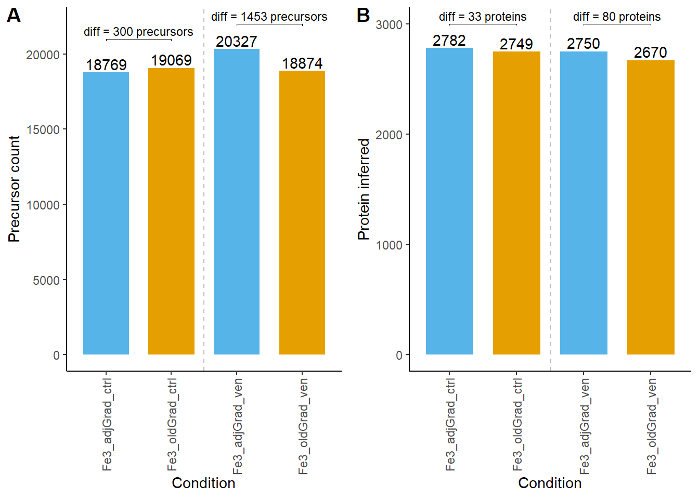
Testing the effect of adjusted gradient over the signal of phosphopeptide enriched using IMAC (all peptides). Differences are not consistent between samples and different gradients. A. MS1 signal, B. MS2 signal; Color: blue - results for adjusted gradient, orange - results for old gradient.
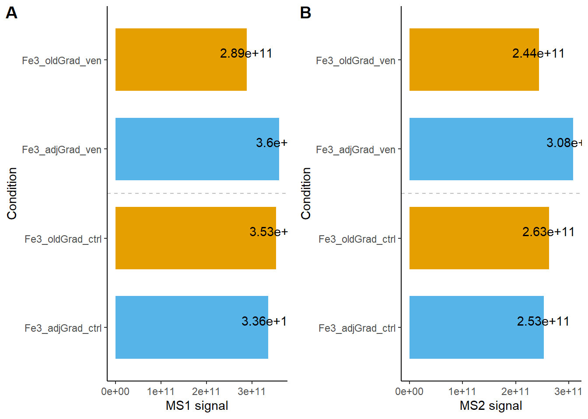
Testing the effect of different gradients over the phosphorylation site localization confidence for IMAC-enriched peptides. Differences are not significant. A. PTM site confidence for each sample (1 - Site.PEP), B. Quantity quality; Color: blue - results for adjusted gradient, orange - results for old gradient.
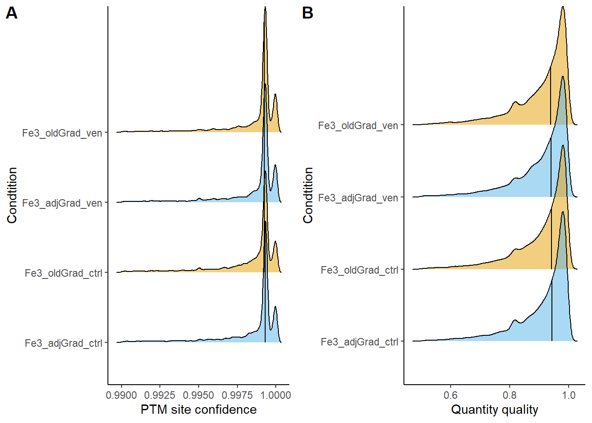
4 Evaluating the effect of spray voltage (1.5 KV vs 2.1 KV) over phosphopeptide enrichment
Peak width of two samples obtained using different spray voltage (1.5 or 2.1 KV) for TiO2-enriched peptides from 500 µg protein. Y-axis: log2(MaxLFQ); X-axis: peak width; color: phosphopetide found using 2.1 KV (blue), phosphopetides found using 1.5 KV (orange), total number of identified peptides (grey background).
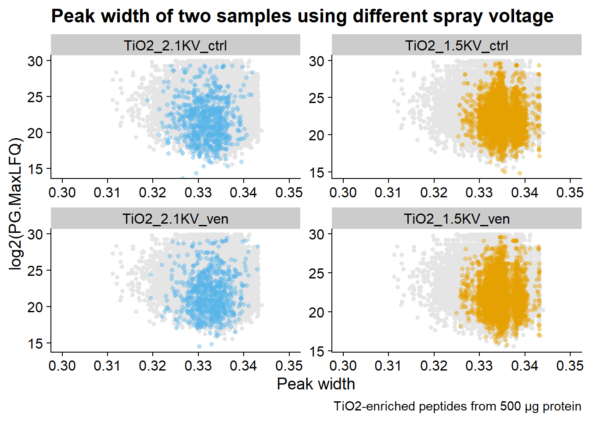
Chromatograms for spray voltage test. MS2-based quantity of the precursor (charged peptide), non-normalized is showed in Y-axis and retention time in minutes on X-axis. TiO2-enriched peptides from 500 µg protein. in blue: 2.1 KV, orange: 1.5 KV.
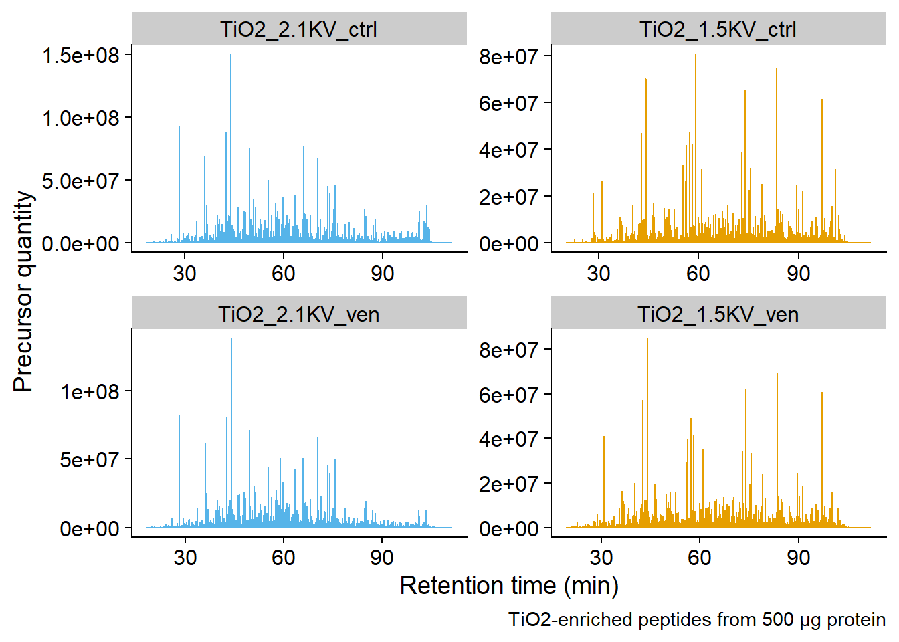
Testing the effect of spray voltage (1.5 KV vs 2.1 KV) over phosphopeptides enriched using TiO2. Differences in precursor numbers are not consistent, but the number of proteins inferred are slightly higher using 1.5 KV spray voltage. A. Number of precursors per sample, B. number of inferred proteins per sample; Color: blue - results for 2.1 KV, orange - results for 1.5 KV.
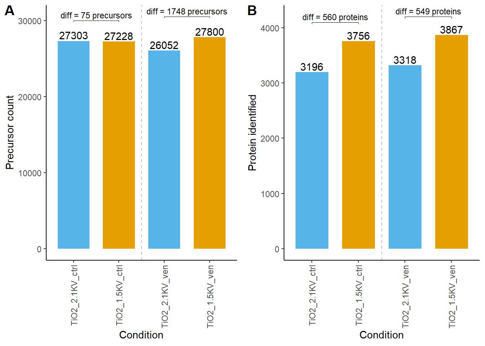
Testing the effect of different spray voltage over the signal of phosphopeptides enriched using TiO2 (all peptides). Differences are not consistent between samples and different spray voltages. A. MS1 signal, B. MS2 signal; Color: blue - results for 2.1 KV, orange - results for 1.5 KV.
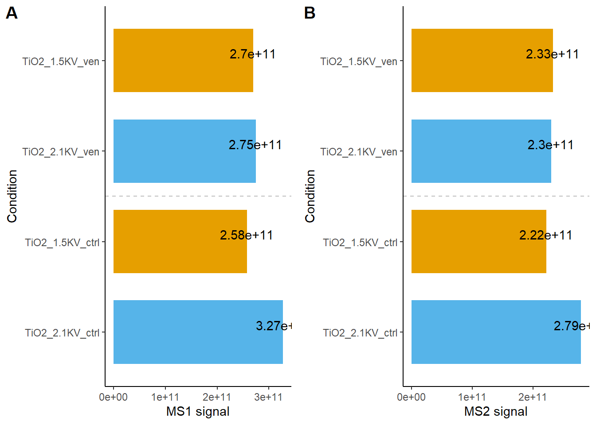
Testing the effect of different spray voltage over the phosphorylation site localization confidence for TiO2-enriched peptides. Differences are not significant. A. PTM site confidence for each sample (1 - Site.PEP), B. Quantity quality; Color: blue - results for 2.1 KV, orange - results for 1.5 KV.
Picking joint bandwidth of 0.00014Picking joint bandwidth of 0.00839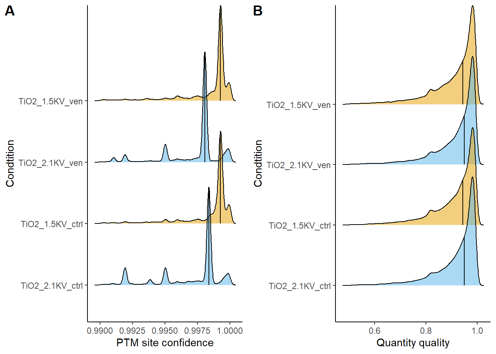
5 Comparing different phosphopeptides enrichment strategies (Fe-NTA, TiO2, and FT from Fe-NTA onto TiO2 cartridges)
Protein intensities for two samples for each strategy. Y-axis stands for log2(MaxLFQ). X-axis stands for sample. Color stands for strategy, where blue: Fe-NTA, orange: TiO2, and green: FT from IMAC onto TiO2.
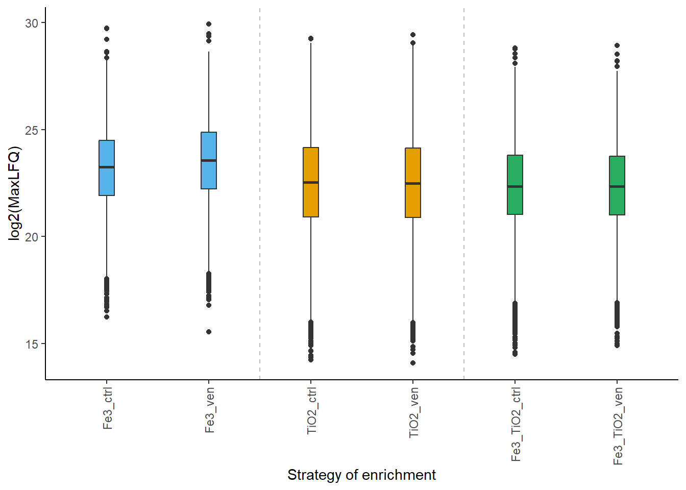
Peak width of two samples using different phosphopeptide enrichment strategies. TiO2 used 500 µg proteins, all other used 250 µg proteins. Y-axis: log2(MaxLFQ); X-axis: peak width; color: phosphopetides enriched after Fe-NTA (blue), phosphopetides enriched after TiO2 (orange), total number of identified peptides (grey background).
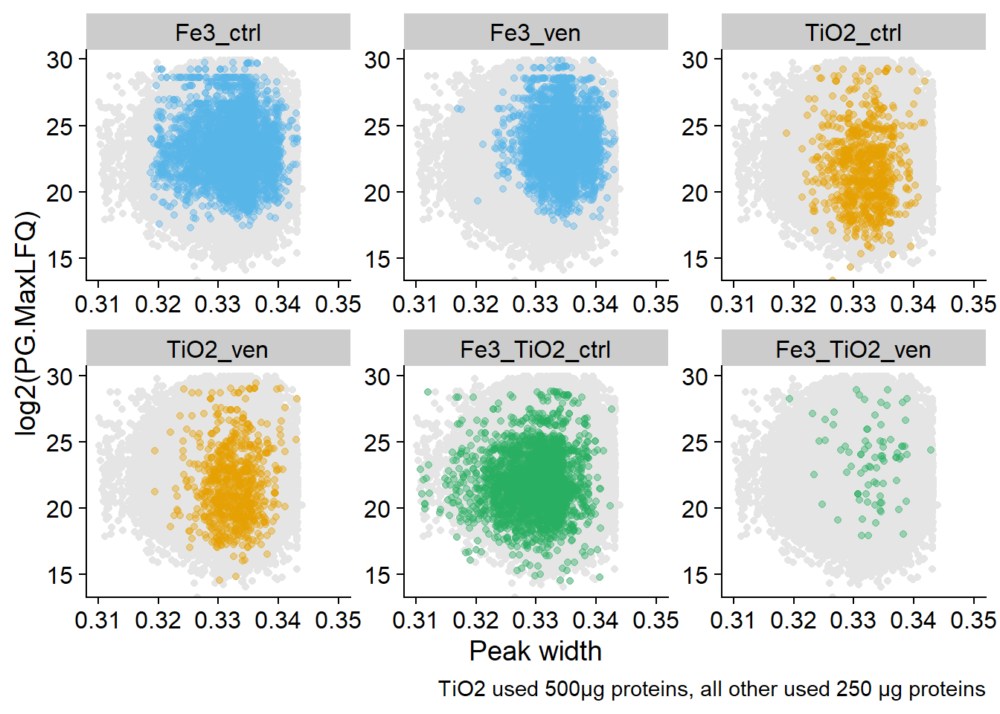
Chromatograms for different phosphoenrichment strategies. MS2-based quantity of the precursor (charged peptide), non-normalized is showed in Y-axis and retention time in minutes on X-axis. In blue: 2.1 KV, orange: 1.5 KV.
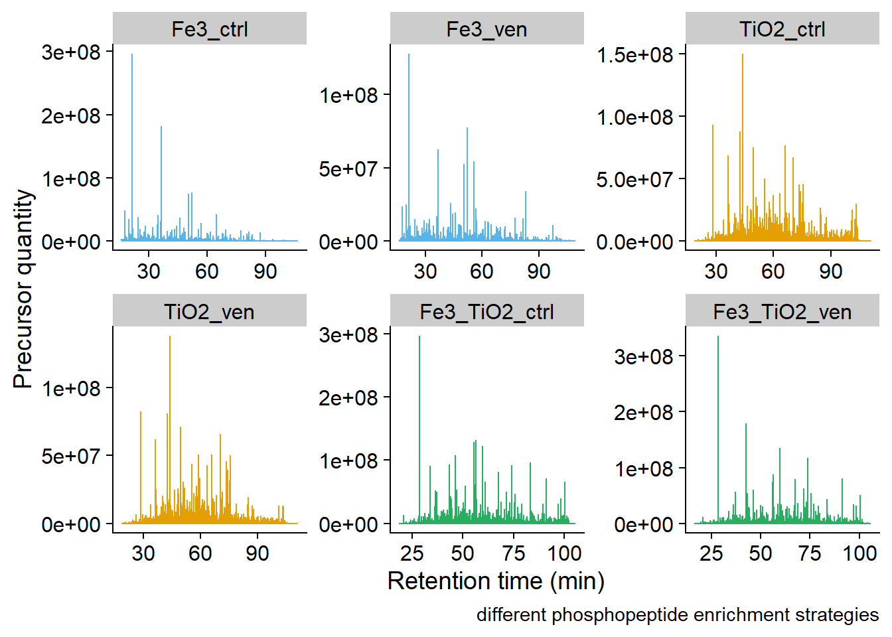
Testing the effect of different enrichment strategies over the phosphorylation site localization confidence and quantity quality per sample. Differences are not significant. One sample from envenomed mouse was considered outlier and envenomed samples were removed from further analysis. A. PTM site confidence for each sample (1 - Site.PEP), B. Quantity quality; Color: blue - results for Fe-NTA enriched peptides, orange - results for TiO2 enriched peptides, green - results for FT from Fe-NTA onto TiO2.
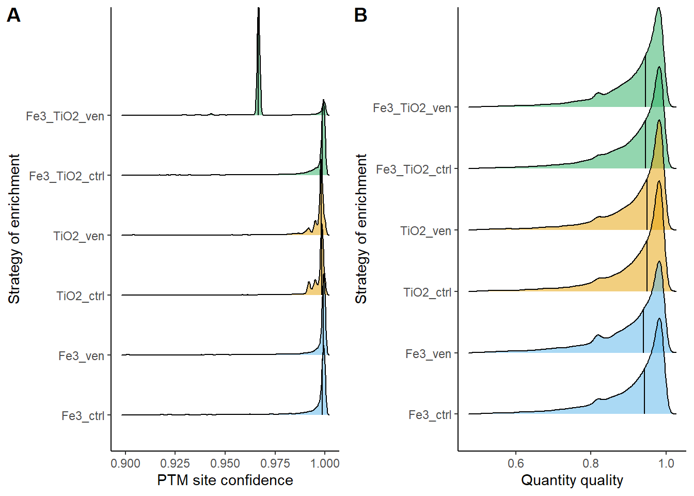
Peak width for samples using different phosphopeptide enrichment strategies. Y-axis: log2(MaxLFQ); X-axis: peak width; color: phosphopetides enriched after Fe-NTA (blue), phosphopetides enriched after TiO2 (orange), total number of identified peptides (grey background). TiO2 used 500µg proteins, all other used 250 µg proteins. Only control samples are shown.
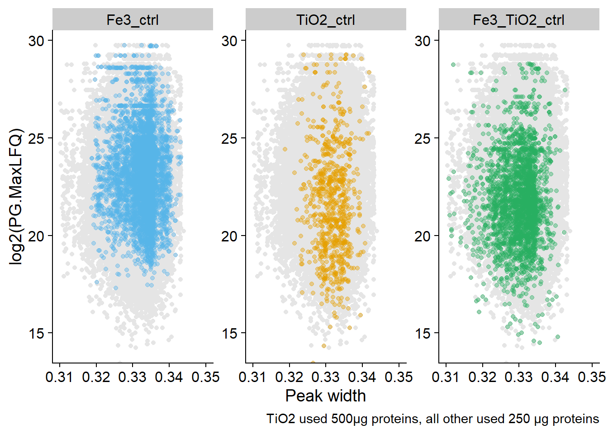
Ion signal per retention time in minutes for control samples. MS2-based quantity of the precursor (charged peptide), non-normalized. Color: phosphopetides enriched after Fe-NTA (blue), phosphopetides enriched after TiO2 (orange), total number of identified peptides (grey background).
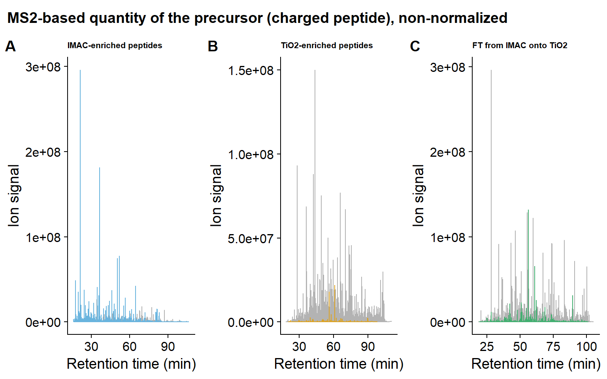
Proportion of phosphosites identified in each strategy. Numbers over the bars represents the frequency of phosphopeptides related to total peptide IDs in each strategy. It was possible to find the phosphosite localization in 28% of peptides eluted from Fe-NTA cartridge, 3% of peptides eluted from TiO2 cartridge, and 11% of peptides coming from FT of Fe-NTA and loaded onto TiO2.
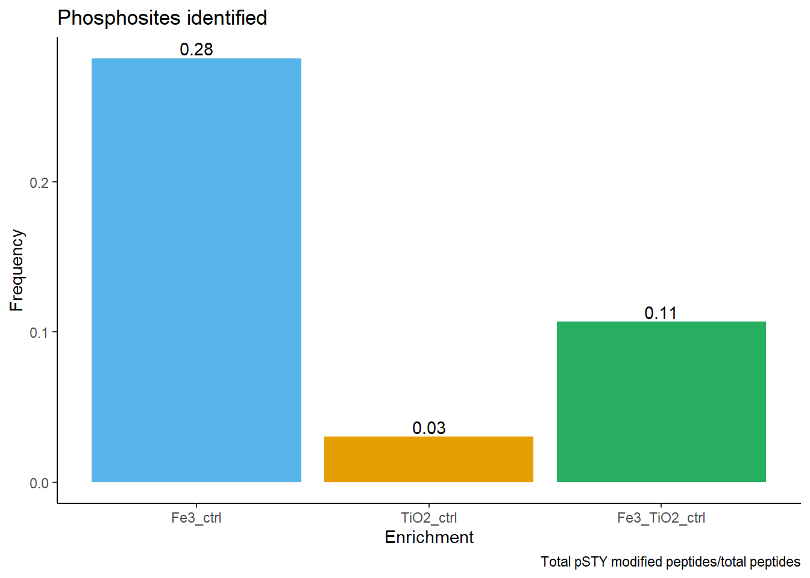
Proportional Venn diagram comparing unique phosphopeptides identified using different strategies. Only peptides containing phosphosite localization were counted.
[1] 1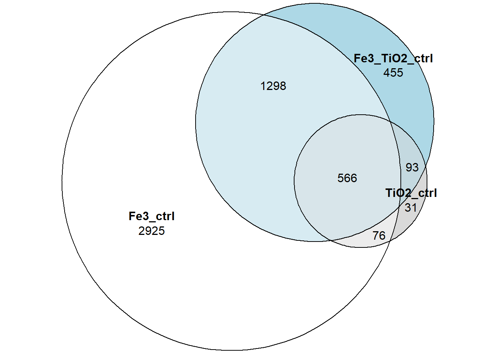
6 Comparing FT from TiO2 and Fe-NTA+TiO2
Peptides identified in the FT coming from TiO2 or Fe-NTA+TiO2 have no evidence supporting phosphorylation site localization, despite the quality of identification. A. PTM site confidence for each sample (1 - Site.PEP), B. Quantity quality; Color: blue - FT from Fe-NTA+TiO2, orange - FT from TiO2.
Picking joint bandwidth of 0.145Picking joint bandwidth of 0.00824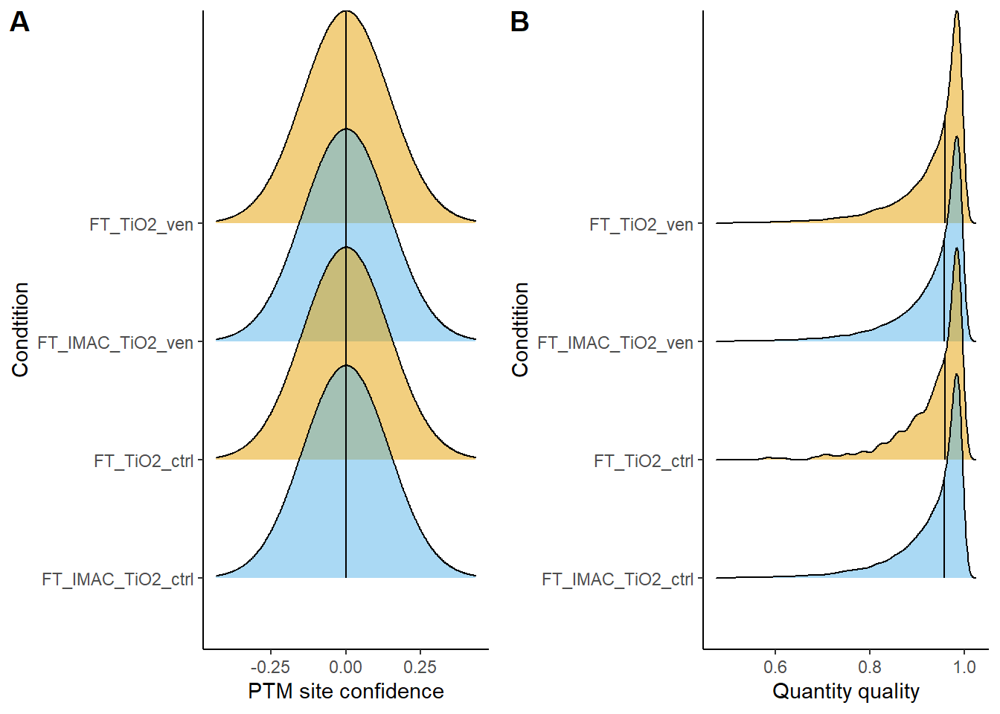
Chromatograms for peptides identified in the flow through from two strategies of phosphopeptide enrichment. FT coming from TiO2 for the control sample is not useful. MS2-based quantity of the precursor (charged peptide), non-normalized is showed in Y-axis and retention time in minutes on X-axis. Blue: FT from Fe-NTA+TiO2, orange: FT from TiO2.
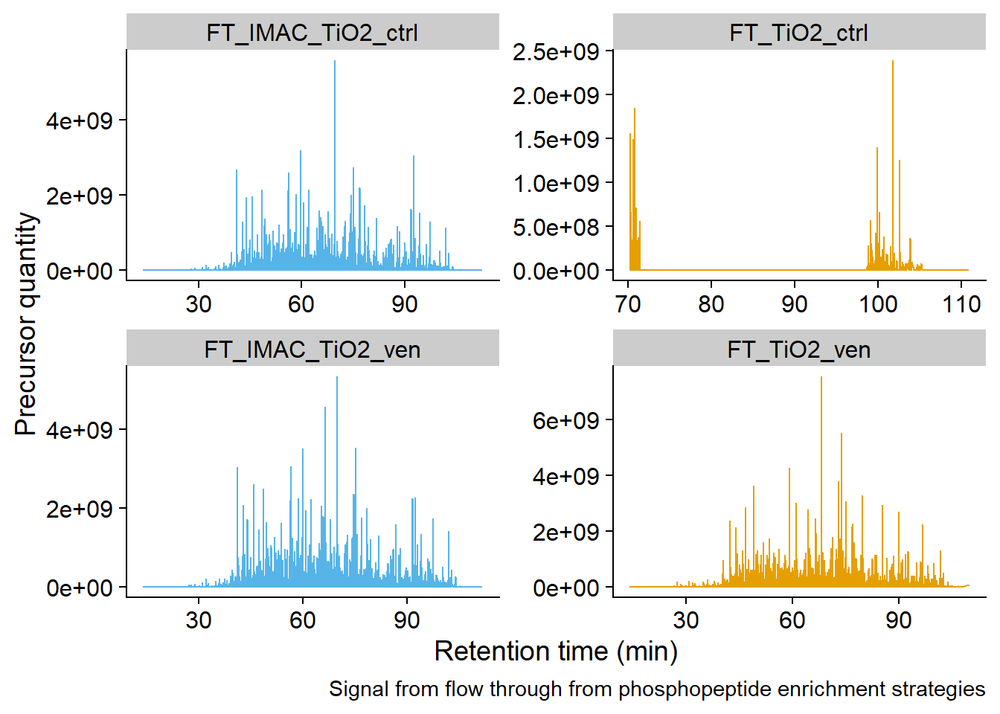
FT from enrichment using only TiO2 or using the FT from Fe-NTA as input for TiO2. A. Number of precursors per sample, B. number of inferred proteins per sample; Color: blue - FT from Fe-NTA+TiO2 enrichment, orange - FT from TiO2 enrichment.
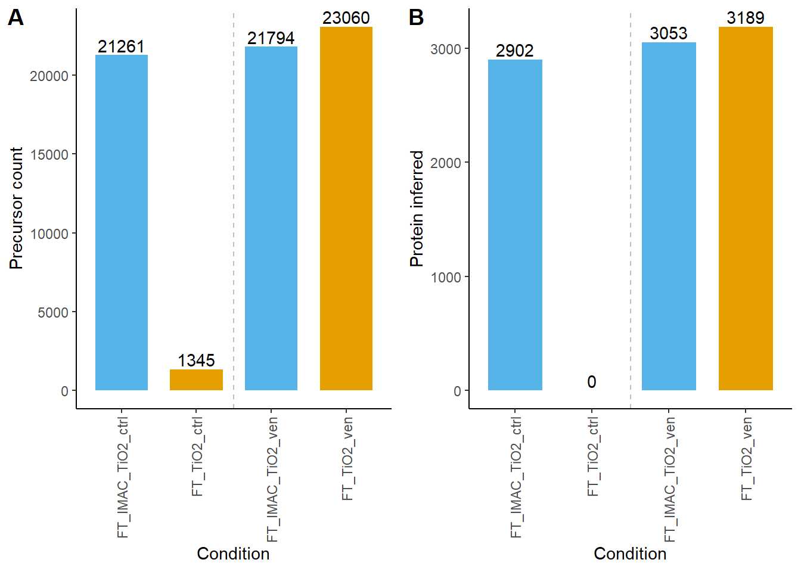
Signal of MS1 and MS2 for FT from enrichment using only TiO2 or Fe-NTA+TiO2 (all peptides). A. MS1 signal, B. MS2 signal; Color: blue - FT from Fe-NTA+TiO2 enrichment, orange - FT from TiO2 enrichment.
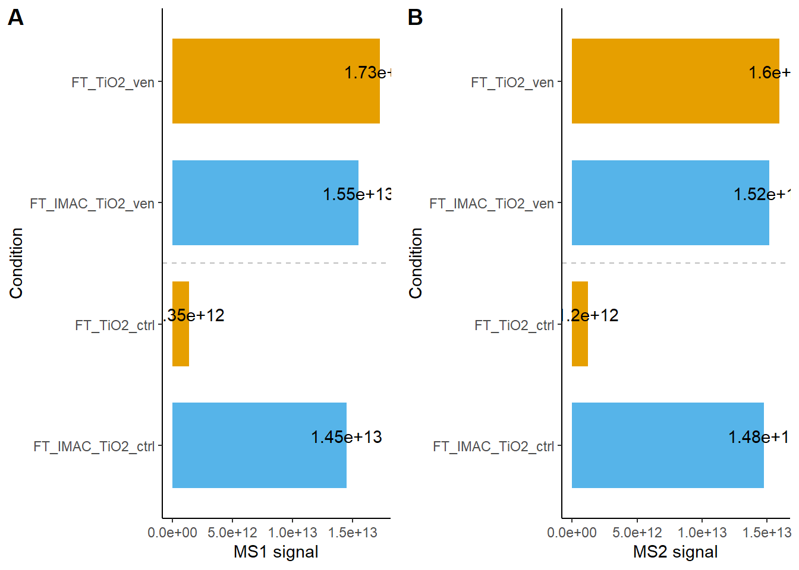